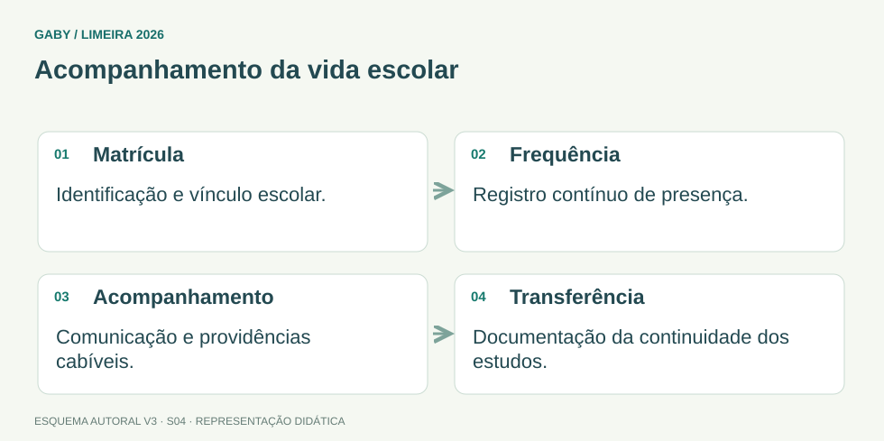

Objetivos do módulo
- Compreender matrícula como ato formal de vínculo escolar.
- Entender a importância do controle de frequência.
- Relacionar transferência à continuidade de estudos.
- Aplicar conferência documental e atendimento correto aos responsáveis.
Acompanhamento da vida escolar

Descrição em texto do esquema
- Matrícula: Identificação e vínculo escolar.
- Frequência: Registro contínuo de presença.
- Acompanhamento: Comunicação e providências cabíveis.
- Transferência: Documentação da continuidade dos estudos.
Oficina visual · aplique o esquema
Um aluno tem faltas reiteradas. É correto registrar transferência apenas para retirar seu nome da turma?
Atividade autoral complementar da V3. Registre sua resposta; a resolução está no arquivo de gabarito e revisão.
Mapa do conteúdo
1. Matrícula
A matrícula formaliza o vínculo do estudante com a unidade escolar. O procedimento envolve identificação, documentação exigida, enquadramento na etapa/ano adequado e registro nos sistemas e livros/documentos previstos pela rede.
O servidor não deve criar exigências arbitrárias. Deve seguir legislação e normas da rede, orientar claramente o responsável e registrar pendências de modo adequado.
2. Frequência
Frequência não é mera estatística: integra a vida escolar e pode produzir efeitos pedagógicos e legais. A escola deve controlar presença conforme regimento e normas do sistema.
Registros devem ser tempestivos e consistentes. Divergências entre diário, sistema e documentos finais precisam ser tratadas antes do encerramento.
3. Comunicação e acompanhamento
A legislação educacional atribui relevância ao acompanhamento da frequência. Conforme a situação e as normas aplicáveis, a escola comunica responsáveis e adota providências institucionais. O secretário atua garantindo registro e fluxo documental adequado.
4. Transferência
Transferência é movimentação do aluno entre unidades/sistemas e exige documentação que permita continuidade dos estudos. O processo deve preservar informações já consolidadas e evitar duplicidade ou lacunas de matrícula.
Ao receber aluno transferido, confira documentos de origem, período cursado, resultados e demais elementos necessários ao correto posicionamento escolar.
5. Atendimento em situações problemáticas
Quando faltar documento ou houver conflito de informação, o servidor deve orientar com base nas normas e encaminhar situações excepcionais à autoridade competente. Não deve negar atendimento com base em preferência pessoal nem “resolver” alterando dados sem respaldo.
Exemplos resolvidos passo a passo
Exemplo 1
Situação: Responsável chega sem um documento exigido e pergunta como regularizar.
Exemplo 2
Situação: Sistema mostra 80% de frequência e diário 74%.
Exemplo 3
Situação: Aluno transferido chega com documentação parcial.
Pegadinhas e erros frequentes
- Confundir matrícula com simples preenchimento de formulário.
- Alterar frequência para “ajudar” aluno.
- Fechar período com divergências não apuradas.
- Negar orientação quando há pendência documental.
- Tratar transferência como cancelamento da trajetória anterior.
Resumo de prova
- Matrícula cria vínculo escolar formal.
- Frequência precisa de registro confiável.
- Transferência preserva continuidade da vida escolar.
- Pendências são tratadas conforme norma, não por improviso.
- Divergências devem ser resolvidas antes de documentos finais.
Exercícios do módulo
Resolva sem consultar o arquivo de gabarito. As questões são autorais e construídas para treinar os conceitos do edital.
- mero recado informal
- controle de estoque
- documento exclusivo do professor
- ato formal de vínculo do estudante com a unidade
- estimativa pessoal
- memória do aluno
- fidelidade aos registros e normas
- interesse de alterar resultados
- sempre se escolhe o diário sem conferir
- deve ser apurada antes do fechamento
- deve ser ignorada
- sempre se escolhe o sistema
- garantir continuidade dos estudos em outra unidade
- apagar trajetória anterior
- substituir histórico por recado
- eliminar matrícula
- inventar exigências
- recusar qualquer explicação
- alterar dados
- seguir as normas e informar procedimento de regularização
- pode ser alterado verbalmente
- não integra vida escolar
- é responsabilidade institucional da escola conforme normas
- é opcional em qualquer situação
- nenhum dado anterior
- período cursado, resultados e identificação
- apenas endereço
- somente telefone
- compromete a integridade da escrituração
- é prática recomendada
- não tem consequência
- é obrigação do secretário
- autoriza criação de regra pessoal
- sempre impede qualquer atendimento
- deve ser escondida
- deve ser tratada conforme procedimento da rede
- ausência de impacto escolar
- serem atos de almoxarifado
- necessidade de registros formais e conferência
- dispensa de documentação
Quando terminar, abra Secretário de Escola 04 - Matrícula, Frequência e Transferência - Gabarito e Revisão.
Checklist de domínio
- ☐ Compreender matrícula como ato formal de vínculo escolar.
- ☐ Entender a importância do controle de frequência.
- ☐ Relacionar transferência à continuidade de estudos.
- ☐ Aplicar conferência documental e atendimento correto aos responsáveis.
Meta do módulo: 80% ou mais nas questões, sem depender de consulta.
Referências e conteúdos auxiliares
- Brasil — Lei 9.394/1996, LDB, texto compiladoOrganização da educação, incumbências escolares, avaliação, frequência e documentação.
- Brasil — Lei 8.069/1990, ECA, texto compiladoProteção integral e direitos da criança e do adolescente. Leia o intervalo exigido no programa.
Referências externas de apoio consultadas para a V3 em 27/09/2026. A origem das questões é o material autoral do projeto; estes links não indicam que uma instituição publicou ou validou os exercícios. As páginas externas precisam de internet. Em informática, confira a versão do programa; em legislação, observe o recorte e as regras de atualização do edital.